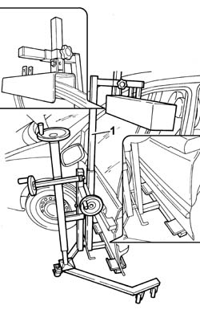
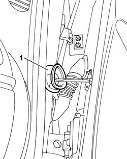
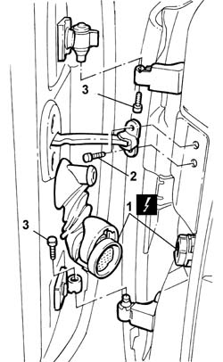
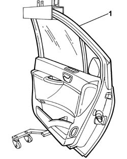

7210E36 R.R. FRONT SIDE DOOR
- Path
- Procedures > 72 PANELS AND FRAME > 7210 REMOVING REFITTING > 7210E EXTERNAL PARTS > 7210E36 R.R. FRONT SIDE DOOR
- Kind
- repair procedure (removal / refitting; the operation number is the code)
- Applies to
- all engines; all production periods
- Interactive page
- https://sloeber94.github.io/elrnDB-fUlss/en/#/179007971
Applies to: all engines; all production periods
 Removing
Removing
 Refitting
RefittingOp. 5530B56 BATTERY DRIP TRAY COVER - R.R.
- Disconnect the negative battery terminal.
1. Position the front side door support tool on the actual door.

Applies to: all engines; all production periods
1. Remove the door coupling seal.

Applies to: all engines; all production periods
1. Disconnect the vehicle front cable loom coupling.
2. Undo the bolts fixing the door check strap to the bodyshell pillar.
3. Undo the bolts fixing the hinges.

Applies to: all engines; all production periods
1. Remove the front side door.

Applies to: all engines; all production periods
Refitting
Removing- Check that the door is not damaged.
- If necessary, retouch the paintwork.
- Fit the front side door.
- Tighten the bolts fixing the hinges.
- Screw in the bolts fixing the door check strap to the bodyshell pillar without tightening them.
- Connect the vehicle front cable loom coupling.
- Fit the vehicle front cable loom coupling seal.
- Tighten the bolts fixing the door check strap to the bodyshell pillar to torque.
- Remove the tool for supporting the front side door.
Op. 7005A10 FRONT SIDE DOOR - ADJUST STRIKER AND ADAPT SEAL IN NECESSARY
- Connect the negative battery terminal.